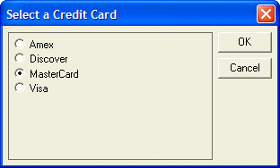

UI_GET_RADIO()
Syntax
Result_String as C = UI_GET_RADIO( Title as C, Default_Number as N, Choice1 as C [, Choice2 as C [, ... [, Choice8 as C ]]] )
Argument | Description |
Title | The title of the dialog box. |
Default_String | Determines which radio button is selected when the dialog box first appears. This parameter is a numeric value indicating which choice (from 1 to 8) is to be selected. For example, if the Default Number is 2, the second radio button is selected when the dialog box appears. |
Choice1 | The label for the first radio button. |
Choice2 ... Choice8 | Optional. Labels for up to seven additional radio buttons. |
Description
UI_GET_RADIO() creates and displays a dialog box containing between 1 and 8 radio buttons. Your response is returned as a Result_String that contains the text of the button that you chose when you clicked the dialog box's OK button. This function is useful for obtaining an answer to a multiple choice condition.

Limitations
Desktop applications only.
Example
For example, a dialog box with four radio buttons can be displayed with the following statement:
ui_get_radio("Four Radio Buttons", 2, "One", "Two", "Three", "Four") |
The Result_String will be empty ("") if the Cancel button is selected.
Present a list of choices as radio buttons. Only one choice can be selected.
choice = UI_GET_radio("Choose Color",1,"Navy","Wine","Turquoise", "Black","Bone") |
If user presses Cancel, end the script.
if choice = "" then end end if trace.writeln(choice) |
See Also
((User Interaction _UI_ Functions|User Interaction (UI) Functions)), UI_GET_RADIO2()